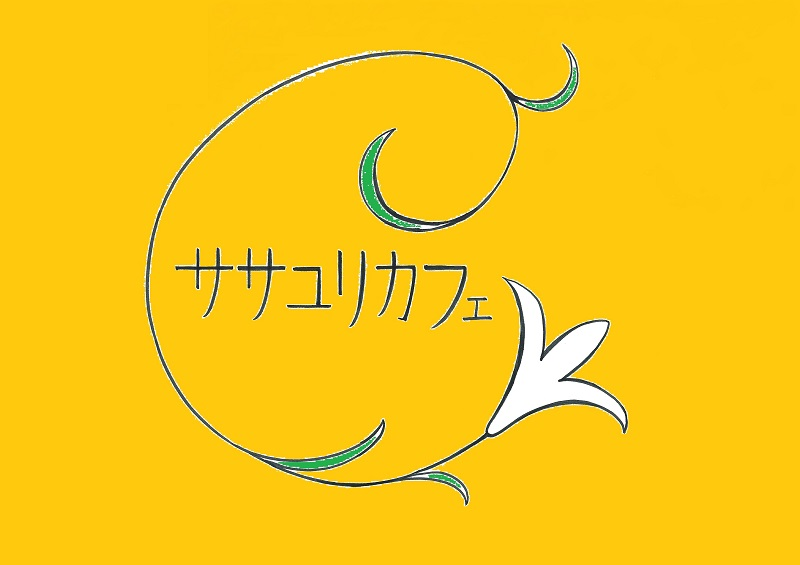

<!DOCTYPE html>
<html>
<head>
    <meta charset="utf-8" />
    <meta http-equiv="X-UA-Compatible" content="IE=edge">
    <title>ササユリカフェ＠西荻窪駅から徒歩3分の天空庭園。フルーツマリネとカレー。ガーデンテラス席でゆったり座れる。</title>
    <!-- 文字コードの指定 -->
    <meta charset="utf-8">
    <!-- IEで常に標準モードで表示させる -->
    <meta http-equiv="X-UA-Compatible" content="IE=edge">
    <!-- viewport(レスポンシブ対応) -->
    <meta name="viewport" content="width=device-width, initial-scale=1.0">
    <!-- SEO -->
    <meta name="description" content="">
    <meta name="keywords" content="">
    <meta name="twitter:title" content="">
    <meta name="twitter:description" content="">
    <meta name="twitter：card" content="summary_large_image">
    <meta name="twitter:image" content="">
    <meta name="twitter:site" content="">
    <meta name="twitter:domain" content="">
    <meta property="og:site_name" content="">
    <meta property="og:title" content="">
    <meta property="og:description" content="">
    <meta property="og:type" content="">
    <meta property="og:url" content="">
    <meta property="og:image" content="" />
    <!-- css -->
    <link href="https://use.fontawesome.com/releases/v5.0.6/css/all.css" rel="stylesheet">
    <link rel="stylesheet" type="text/css" media="screen" href="../../../css/footer/sample01/scss/Index.css">
</head>
<body>
    <header>

    </header>
    <footer>
        <div class="footer-wrapper">
            <div class="footer-inner">
                <h4 class="footer-logo col">
                    
                    <a href="#" class="footer-link">
                        SASAYURI
                    </a>
                </h4>
                <ul class="footer-menu col">
                    <li><a href="" class="footer-link">お問い合わせ</a></li>
                    <li><a href="" class="footer-link">よくある質問</a></li>
                    <li><a href="" class="footer-link">会社概要</a></li>
                </ul>
                <div class="sns-info col">
                    <p>SNSにてお店の情報（最新の展示情報から、予約状況まで）を配信しています。ぜひご覧ください。</p>
                    <a href="#"><i class="fab fa-twitter-square twitter sns-icon"></i></a>
                    <a href="#"><i class="fab fa-facebook facebook sns-icon"></i></a>
                </div>
            </div>
            <div class="footer-info">
                
                <p>〒167-0042 <br>
                    東京都杉並区西荻北3-16-6小美濃本社ビル4階</p>
                <p><span class="tl">Open:</span> 11:30-20:00 / <span class="tl">L.O:</span> 22:00</p>
                <p><span class="tl">Lunch: </span>11:30-14:00 / <span class="tl">Tea:</span> 14:00-18:00 / <span class="tl">Dinner:</span> 18:00-20:00</p>
                <p><span class="tl">Regular Holiday</span>:火、水</p>
                <p><span class="tl">Tel:</span> 03-6913-7615</p>
                <p><span class="tl">Mail:</span> garden@sasayuricafe.com</p>
                <p class="copyright-txt">
                    &copy; 2014-2016 ササユリカフェ All Rights Reserved.
                </p>
            </div>
        </div>
    </footer>
</body>
<script src="https://code.jquery.com/jquery-3.2.1.min.js"></script>
<script src="../js/Index.js" type="text/javascript"></script>
</html>